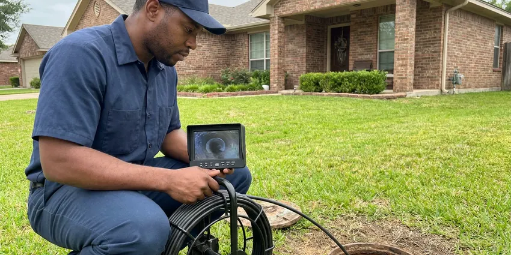

Water Leak Detection in New Braunfels, TX
When you suspect a water leak at your New Braunfels property, DFJ Plumbing is ready to help. Our skilled technicians in Texas use advanced tools to pinpoint the problem.
- Fast Leak Detection
- Advanced Technology
- Expert Technicians
- Transparent Pricing
Need Urgent Water Leak Detection in New Braunfels, TX.
Contact DFJ Plumbing now to schedule your water leak detection service and protect your property.
Your Trusted Source for Water Leak Detection in New Braunfels, TX
DFJ Plumbing specializes in identifying and resolving all types of water leaks, from visible drips to hidden slab leaks. Our team in New Braunfels uses non-invasive methods to accurately locate the source, preventing further damage to your property's foundation and structure.
Our expertise includes:
- Pinpoint hidden slab leaks with precision.
- Detect leaks in walls, ceilings, and under floors.
- Utilize acoustic and thermal imaging technology.

Additional Plumbing Maintenance Services in New Braunfels, TX
Our maintenance and specialty plumbing services in New Braunfels, TX catch small problems before they become emergencies.


Customers
Why Choose DFJ Plumbing for Water Leak Detection in New Braunfels, TX?
Ignoring a water leak, even a small one, can lead to significant structural damage and mold growth over time. Our prompt detection services save you from larger, more expensive repairs down the road.
- Foundation Protection, Water leaks can erode soil around foundations, leading to costly structural damage.
- Mold Prevention, Persistent moisture from leaks creates ideal conditions for hazardous mold growth.
- Water Bill Savings, Even small, unnoticed leaks can significantly increase your monthly water expenses.
Citywide Coverage
DFJ Plumbing proudly serves every neighborhood in and around New Braunfels, ensuring fast response times for your water leak detection needs. Whether you're in the heart of the city or a surrounding suburb, our technicians are ready to assist.
Experienced Team
Our leak detection specialists at DFJ Plumbing are highly trained and experienced in identifying even the most elusive leaks using advanced techniques. They regularly update their skills to stay ahead of new technologies and methods.
Safety-First Approach
We always prioritize the safety of your property and its occupants during leak detection. Our methods are designed to be safe and minimally disruptive, followed by repairs that adhere strictly to local plumbing regulations in New Braunfels.
Trusted Certified New Braunfels Plumbing Services Professionals
At DFJ Plumbing, we take pride in providing certified plumbing services throughout New Braunfels, TX. Backed by recognized industry credentials, our experienced plumbers combine technical skill with genuine customer care. Whether it is repair, installation, or maintenance, we follow strict safety and quality standards to deliver lasting results you can trust.
Call Us Now PHCC Plumbing Contractor Recognition
PHCC Plumbing Contractor Recognition Better Business Bureau (BBB) Accreditation
Better Business Bureau (BBB) Accreditation Angi Certified Pro
Angi Certified Pro ISO 9001 Quality Management Certification
ISO 9001 Quality Management CertificationReliable Water Leak Detection Services in New Braunfels, TX
Slab Leak Detection in New Braunfels
Slab leaks are common in Texas homes due to shifting soil and foundation movement. These leaks occur in pipes beneath your concrete slab, often indicated by warm spots on the floor, sudden spikes in your water bill, or the sound of running water when all fixtures are off. DFJ Plumbing uses specialized acoustic listening devices and thermal imaging cameras to precisely locate these hidden leaks without destructive guesswork. Early detection is key to preventing major foundation damage.

Hidden Wall & Ceiling Leak Detection in New Braunfels, TX
Leaks behind walls or in ceilings can cause significant damage before they become visible, leading to stained drywall, peeling paint, or a musty odor. These often stem from faulty pipe connections, old galvanized pipes, or issues with shower pans and drains. Our technicians use moisture meters and infrared cameras to scan these areas, identifying elevated moisture levels and temperature differences that indicate a hidden leak, minimizing the need for extensive wall demolition.
Underground Water Line Leak Detection in New Braunfels
Leaks in underground water lines, from your meter to your home, can go unnoticed for extended periods, wasting water and causing yard erosion. Signs include unusually green patches in your lawn, persistent wet spots, or a constantly running water meter. DFJ Plumbing employs ground-penetrating radar and tracer gas detection methods to accurately map out and pinpoint leaks in buried pipes, allowing for targeted excavation and repair rather than digging up your entire yard.
Commercial Water Leak Detection in New Braunfels, TX
Commercial properties in New Braunfels face unique challenges with larger, more complex plumbing systems. Leaks can disrupt business operations, lead to costly downtime, and damage inventory. DFJ Plumbing offers specialized commercial leak detection services, utilizing industrial-grade equipment to locate leaks in large facilities, multi-story buildings, and specialized systems. We work efficiently to minimize impact on your business, providing rapid diagnosis and repair solutions.
Leak Detection for PEX and Copper Pipes in New Braunfels
Whether your plumbing system uses modern PEX tubing or traditional copper pipes, DFJ Plumbing has the expertise to detect leaks in both materials. PEX, while flexible, can be susceptible to damage from rodents or improper installation, while copper can corrode over time, especially with New Braunfels's moderately hard water. Our tools are effective across various pipe materials, ensuring accurate detection regardless of your home's plumbing type.
Emergency Water Leak Detection in New Braunfels, TX
Some leaks require immediate attention, particularly those causing significant water damage or posing a threat to your property's stability. DFJ Plumbing provides emergency water leak detection services throughout New Braunfels, TX, offering prompt response to urgent situations. Our goal is to quickly find and contain the leak to prevent further damage and begin the necessary repairs as soon as possible, day or night.
Advanced Leak Detection Technology in New Braunfels
DFJ Plumbing invests in the latest leak detection technology to provide the most accurate and non-invasive service possible in New Braunfels. This includes high-resolution thermal cameras for detecting temperature changes caused by hidden moisture, sensitive acoustic sensors that listen for the subtle sounds of escaping water, and video pipe inspection cameras for internal pipe diagnostics. These tools allow us to find leaks with minimal disruption to your property.

Preventative Leak Detection Audits in New Braunfels, TX
Beyond emergency services, DFJ Plumbing also offers preventative leak detection audits for homeowners and businesses in New Braunfels, TX. This proactive approach involves a thorough inspection of your plumbing system to identify potential weak points or very small, developing leaks before they become major problems. Regular audits can help extend the life of your plumbing, save on water bills, and avoid unexpected costly repairs, especially in older properties.
Water Leak Detection Near Me in New Braunfels, TX
When you search for 'water leak detection near me' in New Braunfels, TX, DFJ Plumbing is your local answer. Our technicians are strategically located across the region to provide fast, efficient service right to your doorstep. We understand the specific plumbing challenges faced by properties in our community, from foundation issues to hard water effects.
Choosing DFJ Plumbing means selecting a local company that cares about our New Braunfels neighbors. We're not just plumbers; we're part of the community, committed to delivering reliable water leak detection services with a personal touch. Trust us to be there when you need us most, providing peace of mind and protecting your property.
DFJ Plumbing at a Glance
- Licensed and insured plumbers serving New Braunfels, TX
- 24/7 emergency service with same-day scheduling
- Clear written estimates, no hidden fees
- 4.9-star rated by 812+ Texas customers
New Braunfels Map
New Braunfels Information
- Population
- 110,958
- Area codes
- 830/210/726
- Service area
- New Braunfels and communities within 40 miles
- Nearby
- San Marcos, Kyle, San Antonio, Austin
Effective water leak detection is crucial for homes in New Braunfels, TX due to the expansive clay soil, which can exacerbate foundation damage from unnoticed leaks and contribute to higher repair costs.
Expert Services
Trust our professionals for reliable DFJ Plumbing solutions in New Braunfels, TX.
Our Specialized Plumbing Services in New Braunfels, TX
At DFJ Plumbing, we provide a complete range of plumbing services across New Braunfels, TX. From leak detection to full system installations, our team ensures fast, precise, and affordable service for both residential and commercial properties. Explore our core services below:


How Our Water Leak Detection Process Works in New Braunfels, TX
We follow a systematic approach to accurately locate water leaks, ensuring a precise diagnosis and effective repair strategy in New Braunfels, TX.
Request a Quote
Start by calling (737) 405-5978 to describe your leak concerns and schedule an appointment. Our team will gather initial information to prepare for your service visit.
On-Site Inspection
A certified technician arrives at your New Braunfels property, performs a visual inspection, and uses specialized tools like acoustic listening devices or thermal cameras to locate the leak source.
Diagnosis & Plan
Once the leak is pinpointed, we explain the findings, discuss repair options, and provide a clear, upfront quote. We ensure you understand the scope of work before proceeding.
Frequently Asked Questions About Water Leak Detection in New Braunfels
The cost for water leak detection in New Braunfels typically ranges from $200 to $600, depending on the complexity and location of the leak. This fee covers the use of advanced equipment and the expertise required to pinpoint hidden leaks. Any subsequent repair costs would be quoted separately after the leak is identified.
We utilize state-of-the-art equipment including acoustic listening devices, thermal imaging cameras, moisture meters, video pipe inspection cameras, and sometimes tracer gas detection. These tools allow us to locate leaks non-invasively and with high precision.
Most residential water leak detection services can be completed within 1 to 3 hours. More complex cases, such as multiple leaks or deep underground issues, might require additional time, but our goal is always efficient and accurate diagnosis.
While leak detection itself typically doesn't require a permit, extensive repairs involving opening walls, altering structural elements, or replacing major sections of plumbing often do. DFJ Plumbing will handle all necessary permit applications for any repair work we perform in New Braunfels.
If you suspect a slab leak, the first step is to call a professional like DFJ Plumbing immediately. Avoid trying to dig or open up the slab yourself, as this can cause more damage. Turn off your main water supply if the leak is severe, and clear the area for our technicians.
DFJ Plumbing stands behind our work. While leak detection itself is a diagnostic service, any subsequent repairs performed by us come with a warranty on both parts and labor. We will provide specific warranty details with your repair quote.
Yes, New Braunfels's moderately hard water can contribute to plumbing issues over time. Mineral buildup from hard water can accelerate corrosion in pipes, especially older copper or galvanized lines, increasing the likelihood of leaks. Regular maintenance can help mitigate this.
Yes, we can also detect leaks in residential and commercial irrigation systems. These leaks can waste significant amounts of water and damage landscaping. Our methods can pinpoint leaks in underground sprinkler lines and valves.
What People Are Saying About Our Plumbing Experts?

Emily R.
I called DFJ Plumbing for plumbing repair, and the technician was fast, polite, and thorough. They explained the problem clearly and fixed it the same day. I will definitely hire them again. Highly recommended!
Plumbing Repair · Cedar Park, TX
Laura S.
I scheduled a water heater replacement, and the team made the process smooth and affordable. The new unit works perfectly, and they cleaned up after completing the job.
Water Heater Replacement · San Antonio, TX
James P.
Our commercial plumbing system had a leak under the sink, and DFJ Plumbing handled it professionally. The plumbers arrived quickly and restored everything without disruption to our customers.
Commercial Plumbing · San Antonio, TX
Daniel K.
A pipe burst at 11 pm and they actually answered. The plumber showed up within the hour, shut everything down, and had us back to normal the next morning. Could not ask for more.
Emergency Plumbing · Pflugerville, TX
Patricia H.
We had a slab leak that two other companies could not find. DFJ Plumbing located it in under an hour, explained our options, and the price matched the quote to the dollar.
Slab Leak Repair · Cedar Park, TXRobert G.
The trenchless sewer replacement saved our front yard. They walked us through the camera inspection footage first so we knew exactly what we were paying for.
Sewer Line Replacement · Austin, TX